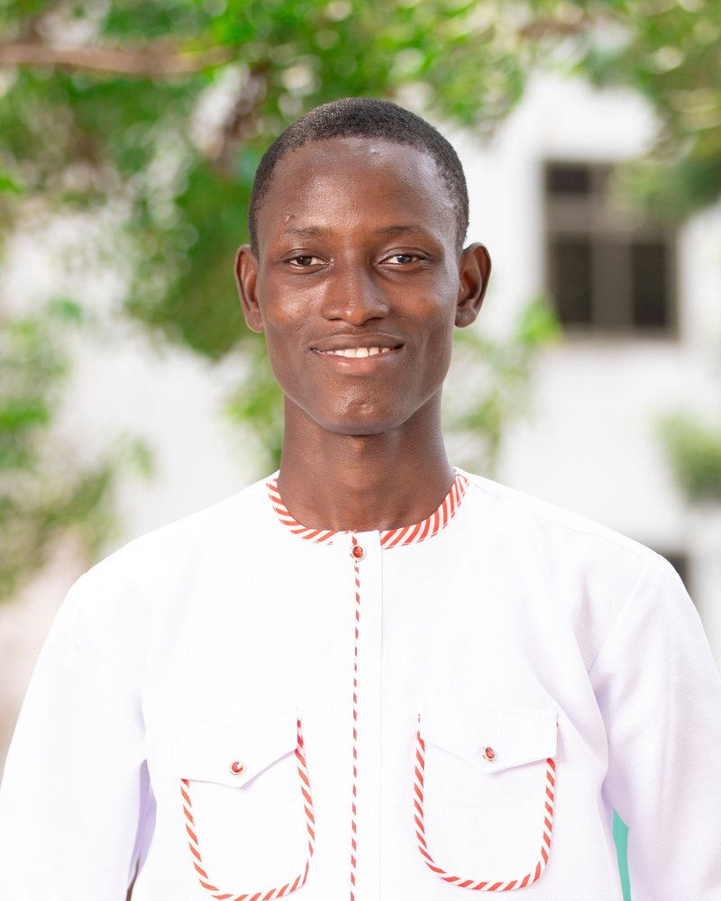

2023Health research
- Instrument
- Consumer wearables (Fitbit, Xiaomi)
- Checked against
- Hospital-grade monitors, 30+ participants, Bland–Altman analysis
- Found
- How far heart-rate and SpO2 readings drift from clinical ground truth
Senior Data Engineer at Turing · Accra, Ghana
I build post-training datasets, RL reward environments, long-horizon coding benchmarks, evaluation pipelines, and LLM judges and verifiers for frontier models and coding agents, and I make sure the numbers they produce can be trusted.

The common thread
It's the same habit in every project I've done, from hospital monitors to frontier AI.
NextWhat happens to a model when the instrument is wrong and it becomes the reward? That's the question I want to study.
I write tasks that make strong models fail, build the graders that score them, and check that those graders can actually be trusted. Along the way I've found verifiers that mis-scored every language but English, LLM judges that invented violations, and coding graders an agent could pass without doing the work.
The question I keep coming back to is why a dataset changes what a model learns, not just whether it helped. That's what I want to study next, from the training side: how post-training data and reward design shape a model, and what happens when the reward is wrong.
$ trust-but-verify grader/
✓ independent reference implementation passes
✓ deliberately broken solutions fail
✓ replays of real agent runs agree
! agent skipped the spec and still passed → exploit
✓ exploit closed, grader re-checked passes
→ grader trusted. now it can be a reward.
Benchmarks, verifiers and training data for leading AI labs, since October 2024.
An agent works on its own for hours and is graded once, on the final repository. I designed the task-creation pipeline for SWE-Marathon, where agents build systems like a TLS 1.3 handshake or a SPARQL query engine from their specifications, and ProdBench, where they fix real open-source bugs.
Most of the work is making the grader trustworthy: every grader is tested against an independent reference implementation, deliberately broken solutions and replays of real agent runs, and we close the reward-hacking exploits that turns up.
SWE-bench only checks whether a fix passes the tests. I led 6–8 engineers on a version that also checks whether the agent followed the instructions it was given, and scores that separately.
Pipelines running up to 17 frontier models on CFBench, SysBench, InverseIF, ReasonIF, MultiChallenge and WebArena. I checked the evaluators as closely as the models: a judge against human reviewers, three failed datasets traced to one grading defect, and an English-only checker extended to Spanish, Brazilian Portuguese, Arabic and more.
Infrastructure for testing whether reusable skills make coding agents better: FastAPI, Next.js, Harbor and Daytona sandboxes on Kubernetes, pgvector duplicate detection with an LLM judge, and Langfuse tracing. Evaluated Claude Opus 5, GPT-5.6 and Qwen 3.7 Max with and without skills.
RLHF preference and SFT datasets for complex instruction following, multi-step reasoning and agentic tool use, including tool-calling trajectories with reasoning traces. Also verifiable instruction-following data: multi-turn conversations with programmatically checkable constraints, where the last turn is written to make frontier models fail.
NeMo Gym is NVIDIA's open-source library of environments for evaluating and training models and agents with reinforcement learning.
When a model is trained with reinforcement learning, something has to decide whether each response followed its instructions. VerifIF does that across 11 languages: rule-based checks handle the countable constraints, LLM judges handle tone and style, and the two combine into a single pass/fail reward. It covers the MultiChallenge, InverseIFEval, CFBench and SysBench datasets.
Invisible Technologies
Reviewed software-engineering and long-horizon agentic tasks and agent trajectories, catching underspecified instructions and tests that accepted wrong answers. Also built RLHF and SFT data for coding, agentic tasks, reasoning, instruction following and image description.
Africa to Silicon Valley (A2SV)
Taught daily sessions on data structures, algorithms and software engineering in Python, mentored students preparing for engineering roles, and ran weekly contests on LeetCode, Codeforces and HackerRank.
Science and Development Journal
Fact-checked and copy-edited scientific manuscripts before publication, checking claims, figures and citations against their sources.
University of Ghana, Computer Engineering
Ran lab sessions for undergraduate computer engineering courses, graded assignments and helped prepare course materials.
Terra
Led the Flutter team on a platform for finding and comparing housing in Ghana, and built the sign-up and verification flow and the listing and comparison screens. Engagement rose 40% and the app handled more than 500 transactions.
UNICEF Ghana · Wa
Designed the survey and collected data from more than 500 respondents in the Upper West Region on the risk of insecurity in the Sahel spilling over into northern Ghana, then analyzed it in SPSS for the project report.
University of Ghana
Measured how well consumer wearables (Fitbit, Xiaomi) track heart rate and SpO2 against hospital-grade monitors in more than 30 participants using Bland–Altman analysis, and built a web app that shows vital signs in real time.
Trestle Academy
Built a supervised learning pipeline that classifies device offset faults with 91% accuracy on held-out data, plus early-warning models that flag faults before they happen.
Send one prompt to several language models at once and watch each answer stream into its own column, with its response time and its own conversation memory.
A platform for the Islamic Education Unit to track performance and attendance across primary and junior high schools, with role-based access, approval workflows and audit logs.
2021 – 2024
University of Ghana
Valedictorian of the College of Basic and Applied Sciences.
A distributed database that keeps patient records in sync across hospitals in real time, a care-management system with telemedicine, and a medication-reminder service studied for its effect on adherence and dosing errors.
Two years of structured study in modern machine learning, from the fundamentals through to the architectures behind today's language models.
Intensive daily training in data structures, algorithms and problem solving with Africa to Silicon Valley. I came back in 2025 as Head of Academy to teach the next cohort.
Five leadership roles and four service commitments, from engineering teams to classrooms in Wa.
Turing
Led a team of 6–8 engineers building an instruction-following version of SWE-bench; reviewed their tasks and trained the task authors.
Africa to Silicon Valley (A2SV)
Led the heads of education who run the training programs, and worked with the School of Engineering and several halls to secure resources for students.
Terra
Led the Flutter team with clean architecture, test-driven development and code review on a housing platform used for 500+ transactions.
Arm(E3)ngage Students Club, University of Ghana
Ran four hands-on Arm workshops for about 60 students, and partnered with six departments and three other universities on the department's first maker fair.
Ghana Science and Tech Explorer Prize
Coached a student team whose Arduino smart cane for the visually impaired won the Most Innovative Project Award.
Elsie Effah Kaufmann Foundation
Training elementary-school teachers at five schools in Accra to run hands-on science experiments in class.
Muslim Intellectuals Network, Wa
Built classrooms for basic schools, donated books and uniforms to pupils who couldn't attend without them, connected students with professors across the country for mentorship, and ran annual award programs.
Save Aid Project
Supported students in underserved communities with classrooms, books and uniforms, widening access to basic education.
African Center for Entrepreneurship and Youth Empowerment
Took part in debates, panels and forums on economic freedom, leadership development and public policy.
Benchmark and task design · verifier and grader design · LLM-as-judge and rubrics · reward-hacking threat modeling · RLHF and SFT data · RL reward environments · Harbor · mini-SWE-agent
Python · TypeScript · JavaScript · Java · C# · C/C++ · SQL
FastAPI · Django · React · Next.js · Flutter · PostgreSQL
Google Cloud · GKE · Kubernetes · Docker · sandboxed execution · Jenkins · Linux · Git
pytest · mutation testing · adversarial test design · trajectory analysis
scikit-learn · pandas · NumPy · embeddings and pgvector · statistical analysis
09 · Contact
Email is the best way to reach me.